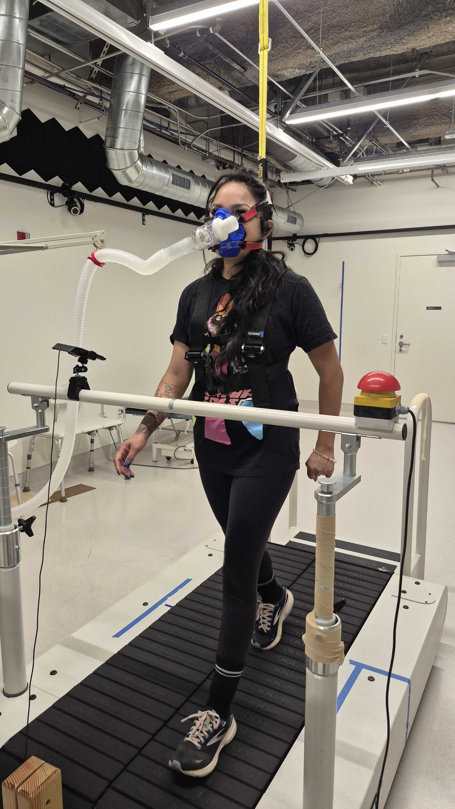

We're studying how motivation changes after stroke and what it means for your mobility. Your experience can help shape better rehabilitation.
Interest FormHelp advance stroke rehabilitation research and receive these benefits:
Comprehensive evaluations of your balance, walking, and cognition — at no cost to you.
Gift card compensation for every hour you spend in study visits.
Receive a brain MRI scan. Parking is free.
After a stroke, many people experience apathy — a loss of motivation that goes beyond feeling tired or sad. This can affect how much you walk and engage in daily life, even when your body is physically capable.
Our team at the Gait Rehabilitation and Motor Learning (GRML) Lab at the University of Southern California (USC) is studying this connection. This is an observational study (not a treatment), involving three visits where we assess your walking, decision-making, and brain activity. The findings will help develop new rehabilitation approaches that address motivation — not just physical ability.
Inside the GRML Lab
You may be eligible if:
You may not be eligible if:
Not sure? It only takes a minute to find out.
Interest FormThree visits: Here's the breakdown:
Assessments of balance and walking, an interview about motivation and mood, and decision-making tasks. You'll be fitted with a small wearable sensor to take home.
Wear a lightweight sensor during your normal routine. Complete a few short surveys from home.

Return the sensor. We measure your walking energy efficiency and ask about your daily mobility and community participation.
A safe, non-invasive MRI to map brain connectivity.
This study is led by the Gait Rehabilitation and Motor Learning (GRML) Lab at USC.
Principal Investigator
Division of Biokinesiology and Physical Therapy
University of Southern California
Questions about the study? We'd love to hear from you.
Center for Health Professions, Room G31
1540 Alcazar St.
Los Angeles, CA 90033
(323) 577-5556